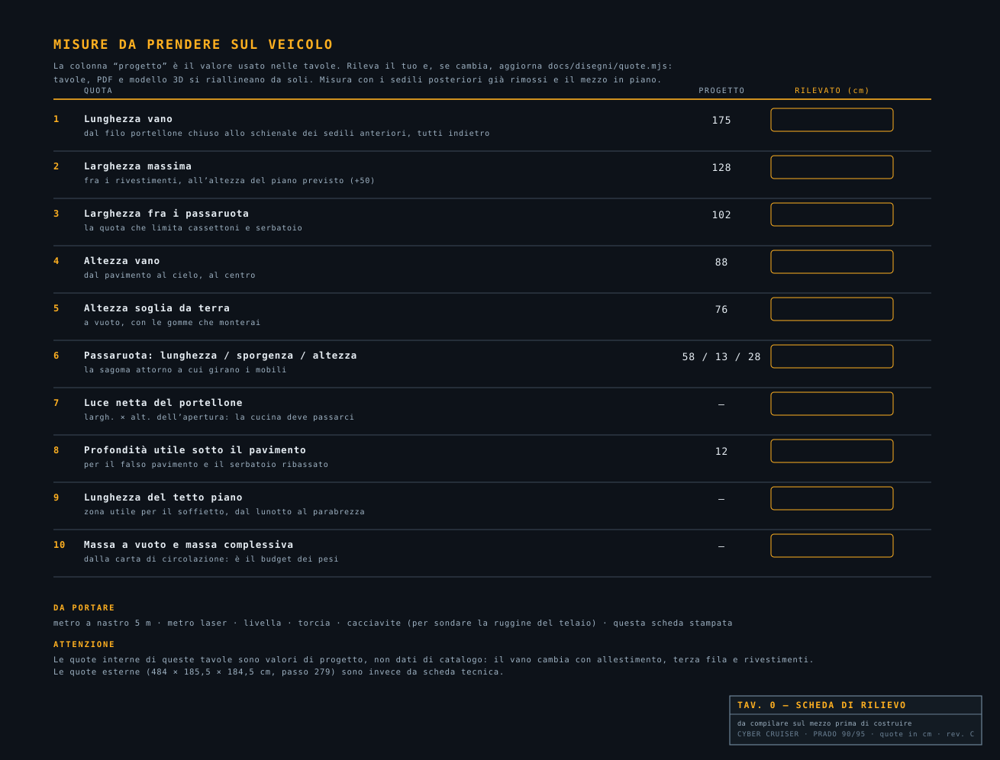
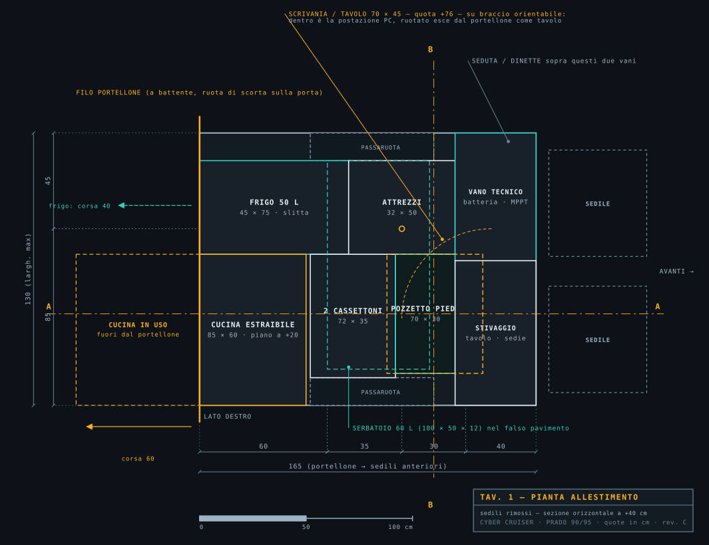
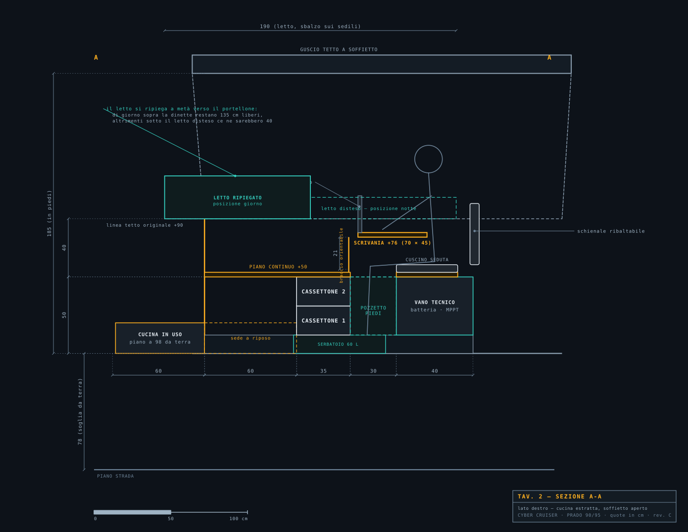
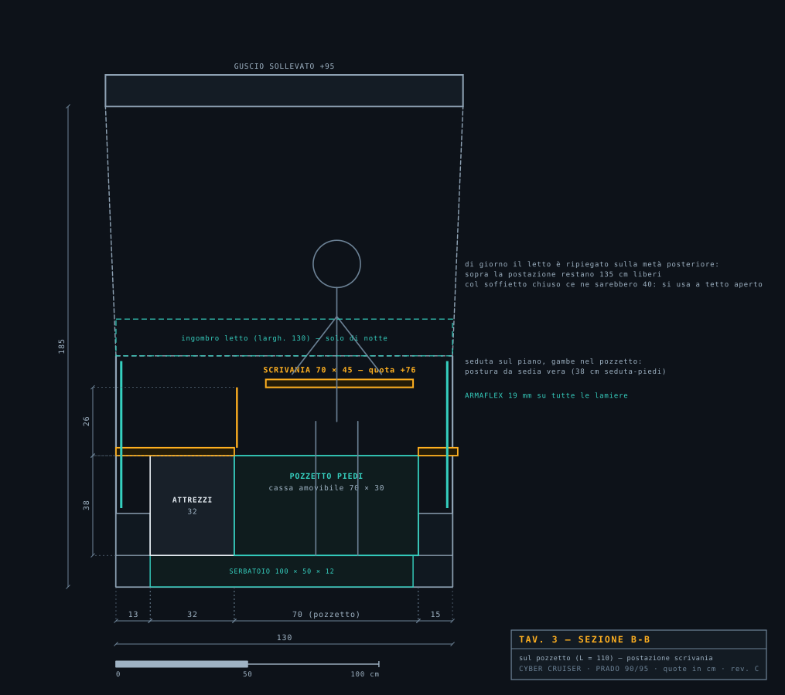
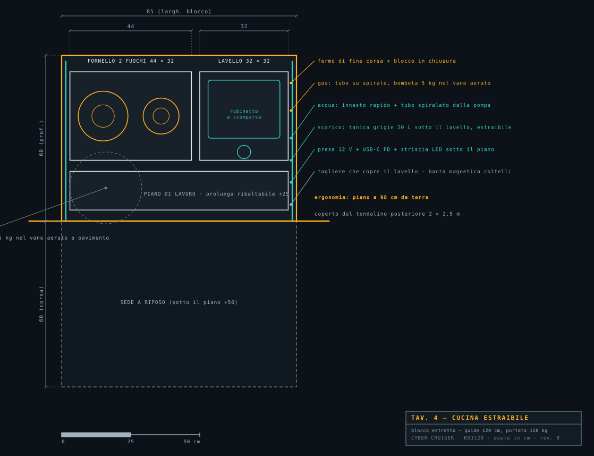
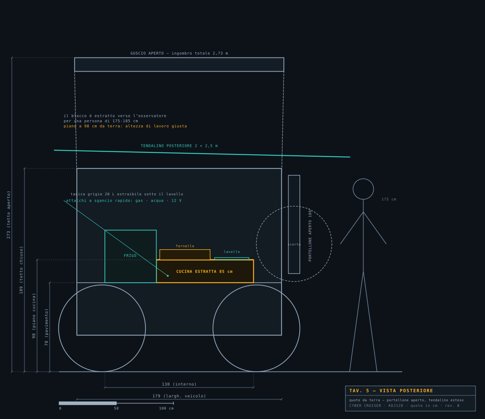

CYBERCRUISER — DISEGNI TECNICI INTERNI
Land Cruiser KDJ120 passo lungo · quote in cm · rev. B
Pavimento del vano a 78 cm da terra: è la quota che comanda l’ergonomia di tutto il progetto.
Tav. 0 — Scheda di rilievo da compilare sul mezzo
Tav. 1 — Pianta dell’allestimento
Tav. 2 — Sezione longitudinale A-A (cucina estratta, scrivania, letto)
Tav. 3 — Sezione trasversale B-B (pozzetto piedi e postazione PC)
Tav. 4 — Cucina estraibile, pianta di dettaglio
Tav. 5 — Vista posteriore con cucina in uso